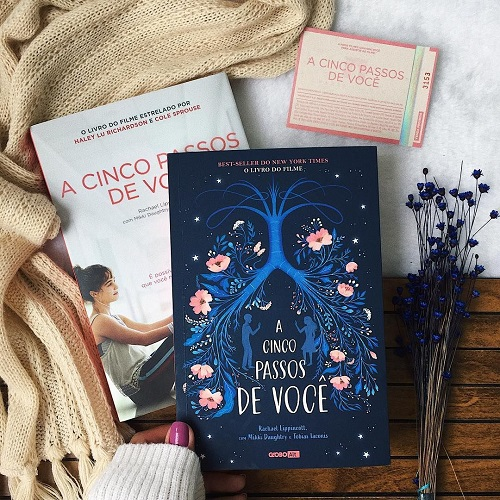
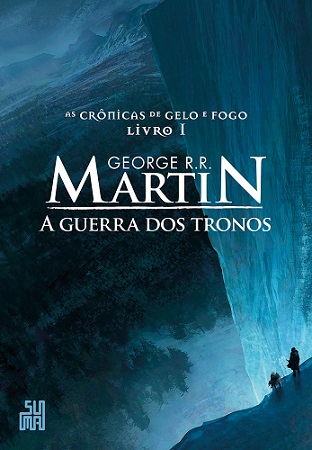

- É assim que acaba.
- A hipotese do amor.
- Os dois morrem no final.
- Vermelho branco e sangue azul.
- A cinco passos de você.
Autor: Collen Hover.
Ano: 2018.
Um romance sobre a força necessária para fazer as escolhas corretas nas situações mais difíceis. Da autora das séries Slammed e Hopeless. Lily nem sempre teve uma vida fácil, mas isso nunca a impediu de trabalhar arduamente para conquistar a vida tão sonhada. Ela percorreu um longo caminho desde a infância, em uma cidadezinha no Maine: se formou em marketing, mudou para Boston e abriu a própria loja. Então, quando se sente atraída por um lindo neurocirurgião chamado Ryle Kincaid, tudo parece perfeito demais para ser verdade. Ryle é confiante, teimoso, talvez até um pouco arrogante. Ele também é sensível, brilhante e se sente atraído por Lily. Porém, sua grande aversão a relacionamentos é perturbadora. Além de estar sobrecarregada com as questões sobre seu novo relacionamento, Lily não consegue tirar Atlas Corrigan da cabeça — seu primeiro amor e a ligação com o passado que ela deixou para trás. Ele era seu protetor, alguém com quem tinha grande afinidade. Quando Atlas reaparece de repente, tudo que Lily construiu com Ryle fica em risco. Com um livro ousado e extremamente pessoal, Colleen Hoover conta uma história arrasadora, mas também inovadora, que não tem medo de discutir temas como abuso e violência doméstica. Uma narrativa inesquecível sobre um amor que custa caro demais.
Autor: Ali Hazelwood.
Ano: 2021.

Quando um relacionamento falso entre cientistas encontra a irresistível força da atração, as teorias de uma mulher sobre o amor, cuidadosamente calculadas, são postas à prova. Olive Smith, uma estudante de doutoramento em Biologia, não acredita em namoros duradouros. Após terminar o relacionamento com Jeremy, percebe que a sua melhor amiga, Anh, gosta dele e decide juntá-los. Para a convencer de que não se importa e de que está feliz e a namorar, Olive precisa de o provar, mas, pressionada, entra em pânico e resolve beijar o primeiro homem que vê: Adam Carlsen, um jovem professor de outro departamento. Olive acaba por ficar chocada ao perceber que este tirano do laboratório da Universidade de Stanford, conhecido por deixar os estudantes em lágrimas, aceita manter a farsa e fingir que é, realmente, seu namorado. Quando uma conferência científica corre mal e ameaça a carreira de Olive, Adam surpreende-a de várias formas… e uma pequena possibilidade científica, o que era apenas uma hipótese sobre o amor, transforma-se então numa experiência inesperada. Uma história maravilhosa imersa num ambiente académico. Um tubo de ensaio para a vida.
Autor: Adam silvera.
Ano: 2021.
No dia 5 de setembro, pouco depois da meia-noite, Mateo Torrez e Rufus Emeterio recebem uma ligação da Central da Morte. A notícia é devastadora: eles vão morrer naquele mesmo dia. Os dois não se conhecem, mas, por motivos diferentes, estão à procura de um amigo com quem compartilhar os últimos momentos, uma conexão verdadeira que ajude a diminuir um pouco a angústia e a solidão que sentem. Por sorte, existe um aplicativo para isso, e é graças a ele que Rufus e Mateo vão se encontrar para uma última grande aventura: viver uma vida inteira em um único dia. Uma história sensível e emocionante, Os Dois Morrem no Final nos lembra o que significa estar vivo. Com seu olhar único, Adam Silvera mostra que cada segundo importa, e mesmo que não haja vida sem morte, nem amor sem perda, tudo pode mudar em 24 horas.
Autor: Casey McQuiston.
Ano: 2019
Quando sua mãe foi eleita presidenta dos Estados Unidos, Alex Claremont-Diaz se tornou o novo queridinho da mídia norte-americana. Bonito, carismático e com personalidade forte, Alex tem tudo para seguir os passos de seus pais e conquistar uma carreira na política, como tanto deseja. Mas quando sua família é convidada para o casamento real do príncipe britânico Philip, Alex tem que encarar o seu primeiro desafio diplomático: lidar com Henry, irmão mais novo de Philip, o príncipe mais adorado do mundo, com quem ele é constantemente comparado ― e que ele não suporta. O encontro entre os dois sai pior do que o esperado, e no dia seguinte todos os jornais do mundo estampam fotos de Alex e Henry caídos em cima do bolo real, insinuando uma briga séria entre os dois. Para evitar um desastre diplomático, eles passam um fim de semana fingindo ser melhores amigos e não demora para que essa relação evolua para algo que nenhum dos dois poderia imaginar ― e que não tem nenhuma chance de dar certo. Ou tem?
Autor: Rachael Lippincott.
Ano: 2019.

"Stella Grant gosta de estar no controle. Ela parece ser uma adolescente típica, mas em sua rotina há listas de tarefas e inúmeros remédios que ela deve tomar para controlar a fibrose cística, uma doença crônica que impede que seus pulmões funcionem como deveriam. Suas prioridades são manter seus pais felizes e conseguir um transplante – e uma coisa não existe sem a outra. Mas para ganhar pulmões novos, Stella precisa seguir seu tratamento à risca e eliminar qualquer chance de infecção, o que significa que ela não pode ficar a menos que dois metros de distância – ou seis passos – de outros pacientes com a doença. O primeiro item é fácil para ela, mas o segundo pode se provar mais difícil do que ela esperava. O único controle que Will Newman deseja é o de sua própria vida. Ele não dá a mínima para o novo tratamento experimental para o qual foi selecionado e não aguenta mais a pressão de sua mãe para que melhore. Prestes a completar dezoito anos, ele mal pode esperar para finalmente se livrar das máquinas e hospitais, usando o pouco de vida que ainda lhe resta para conhecer o mundo. Stella e Will são muito diferentes. Ao mesmo tempo, a doença que os une não é a única coisa que têm em comum. Eles têm que ficar a seis passos um do outro, mas, conforme a conexão entre os dois aumenta, a vontade de burlar a distância física parece insuportável. Um grande amor vale um passo roubado?"
- A guerra dos tronos.
- Recursão.
- Percy Jackson e o ladrão de raios.
- Trono de vidro.
- Corte de espinhos e rosas.
Ficção/Fantasia
Autor: George R. R. Martin
Ano: 1996
